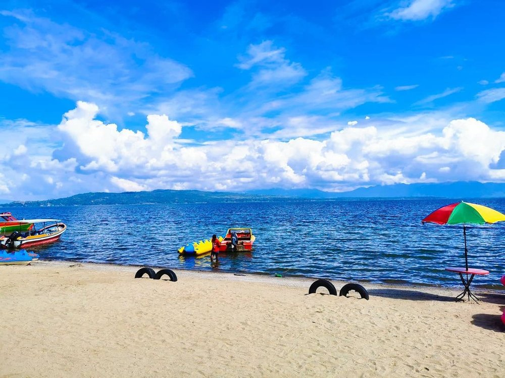

Lumban Bul-Bul

Pantai Lumban bulbul merupakan destinasi wisata yang terletak di tengah kota Balige. Rute Jalan yang dapat dilalui apabila anda dari arahMedan dapat melalui jalan lintaas sumatera, dan kira-kira 1km sebelum memasuki jembatan balige, ada simpang 4, dan kita dapat masuk ke sebelah kanan, dan mengikuti alur jalannya sampai menemukan spanduk atau Tulisan Pantai Lumban bulbul dengan jalan yang lumayan bagus. Pantai Lumban bulbul merupakan salah satu dari beberapa pantai di toba Samosir. Tiket masuk wisata ini hanya membayar uang parkir untuk Sepeda motor : Rp5.000,-/motor, dan untuk mobil : Rp10.000,-/mobil.Dan disana banyak warung-warung yang menjual makanan dan cenderamata, Dengan budget Rp100.000 kita bisa mendapatkan 5 mie goreng komplit dengan telur dan 5 teh manis dingin. Kalau cenderamata yang paling low harga adalah gantungan kunci mulai dari harga Rp10.000 sampai dengan Rp50.000, dan ada souvenir lainnya seperti syal HORAS rajut, baju style ulos, dan yang lainnya tentang kerjainan Toba dapat kita temukan disini.